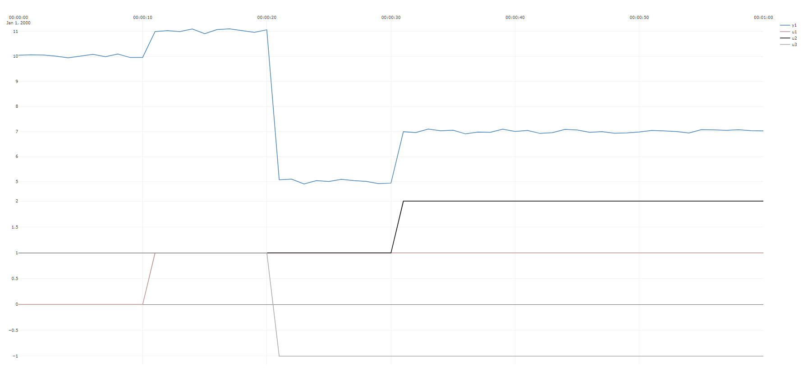
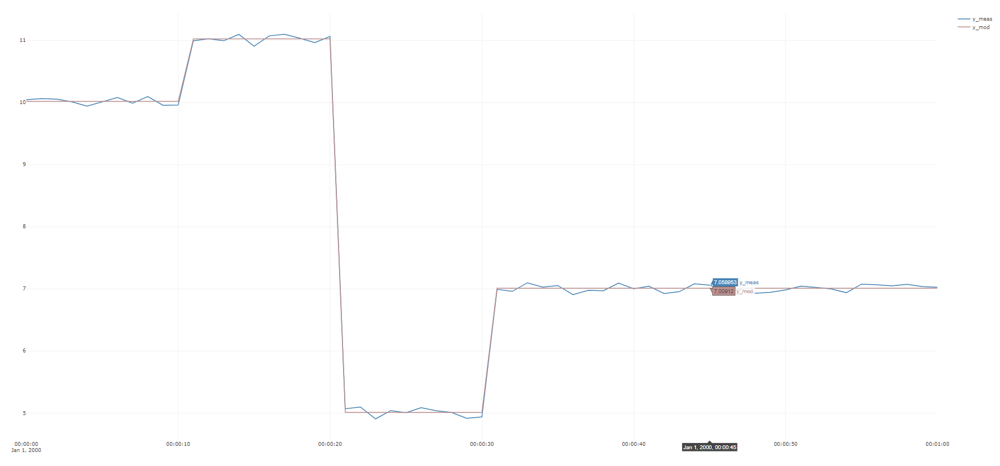

Example 2 : Linear regression example
In this example, a synthetic dataset is created with the help of helper methods from TimeSeriesAnalysis,
then Vec.Regress is used to do linear regression on the dataset to determine the parameters which
best describe the relationship between inputs u1,u2,u3 and output y.
Vec.Rand is used to add noise to the dataset, Vec.Mult is used to multiply vector and scalars
The code:
public void Ex2_linreg()
{
double[] true_gains = {1,2,3};
double true_bias = 5;
double noiseAmplitude = 0.1;
double[] u1 = TimeSeriesCreator.Step(11, 61, 0, 1);
double[] u2 = TimeSeriesCreator.Step(31, 61, 1, 2);
double[] u3 = TimeSeriesCreator.Step(21, 61, 1,-1);
double[] y = new double[u1.Length];
double[] noise = Vec.Mult(Vec.Rand(u1.Length, -1,1,0),noiseAmplitude);
for (int k = 0; k < u1.Length; k++)
{
y[k] = true_gains[0] * u1[k]
+ true_gains[1] * u2[k]
+ true_gains[2] * u3[k]
+ true_bias + noise[k];
}
Plot.FromList(new List<double[]> { y, u1, u2, u3 },
new List<string> { "y1=y1", "y3=u1", "y3=u2", "y3=u3" }, 1);
double[][] U = new double[][] { u1, u2, u3 };
var results = Vec.Regress(y, U);
TestContext.WriteLine(Vec.ToString(results.param, 3));
TestContext.WriteLine(SignificantDigits.Format(results.Rsq, 3));
Plot.FromList(new List<double[]>() { y, results.Y_modelled },
new List<string>() { "y1=y_meas", "y1=y_mod" }, 1);
}
The dataset :

Note
The above is an example of how to plot time-series on multiple y-axes, which is extremely useful to visualize input/output relationships.
The resulting modeled y_modelled compared to y:

The estimated parameters (rounded to three significant digits) returned are:
[1.02;2.01;3.02;5.01]
which is very close to the true values:
[1;2;3;5]
Note
The returned vector of parameters will be slightly dependent on the seed number given to Vec.Rand(), but if the inputs U
have enough excitation, the significance should be minimal.
The returned Rsquare is 99,9, indicating that in this case the model describes variations in the dataset very well, as should be expected in this case,
as we have generated the dataset from a linear model that has the same structure as that used by Vec.Regress with the same inputs, and all three inputs vary enough
and interdependently of each other.